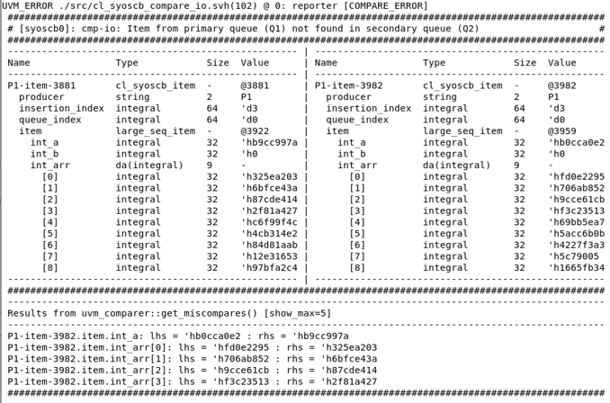

The SyoSil UVM Scoreboard has been designed to make debugging a failed test as simple as possible. This section describes some of the features which help to track down where errors occur.
Miscompare tables
When using the IO, IOP or IO_2HP comparison strategies, a miscompare table is generated when a comparison fails. The table contains a printout of the items which generated the miscompare, and may also contain a comparer report with specific information on which fields failed the comparison. By default, the comparer report is generated whenever an error occurs. It may be disabled via the cl_syoscb_cfg.enable_comparer_report knob.
When using Out of Order comparisons or a user defined compare strategy, comparer reports are disabled, as OOO compares naturally lead to a large number of "miscompares" when searching for a match.
An example of a miscompare table and comparer report is shown below: The upper portion of the miscompare table contains the two sequence items next to each other. The lower portion contains miscompare information retrieved from the uvm_comparer used to perform the comparison, indicating which fields caused the miscompare.

The maximum number of miscompares shown is controlled via the show_max knob in the uvm_comparer used for the comparison. To modify this value, use cl_syoscb_comparer_config::set_show_max().
uvm_comparers are by default set to print miscompare information whenever a miscompare occurs. This is controlled via the verbosity knob of a uvm_comparer, which can be set with cl_syoscb_comparer_config::set_verbosity(). The default verbosity level used by uvm_comparer's is UVM_LOW. Since the scoreboard incorporates its own comparer reports, the uvm_comparer's reports have been muted. When a configuration object is initialized with cl_syoscb_cfg::init(), or the configuration's default comparer is first retrieved with cl_syoscb_cfg::get_default_comparer(), the default comparer's verbosity is set to UVM_HIGH to avoid cluttering the output to STDOUT.
Note that on UVM 1.1d, an error in the UVM source code has hard-coded the verbosity of some miscompare messages to UVM_LOW. These cannot be removed without modifying the UVM source used by the simulator. If possible, it is recommended to use another version of UVM where this problem does not exist.
Scoreboard dump
During simulation, the contents of the scoreboard's queues may be dumped to log files for postprocessing or inspection. Items may either be dumped to one file containing all transactions, or they may be dumped to separate files, one for each queue. Items may either be dumped using a standard uvm_printer, or they may be dumped using the uvm_xml_printer, which formats items into an XML-description which allows for easy postprocessing.
Scoreboard dumping is toggled with the config knob cl_syoscb_cfg.full_scb_dump. Other config knobs include cl_syoscb_cfg.full_scb_dump_type and cl_syoscb_cfg.full_scb_dump_split. See the entry on scoreboard dumping in Overview of included tests for further information.
Orphan dump
If items remain in any of the queues after simulation, these are seen as "orphans", which are generally treated as errors. Orphans may also be dumped to a log file once simulation finishes. This is toggled with the configuration knob cl_syoscb_cfg.dump_orphans_to_files.
The same notes regarding the choice of printer apply as for the scoreboard dump.
XML printer
The SyoSil UVM Scoreboard comes with a printer that prints items as XML (uvm_xml_printer). This makes it simple to postprocess and transform the scoreboard or orphan dumps as desired.
Once a queue or scoreboard has been dumped with the printer, this file may be transformed into an HTML view of the items by using the make target
make generate_html XML_FILE=<filename>
Likewise, it may be transformed into the GraphML format by using the make target generate_dot
In the directory lib/xml the xsd file used to verify generated XML files, as well as XSLT-files for transforming to HTML and GraphML, are located.
Limitations
The current implementation of the XML printer does not support nested arrays, as these are not supported by UVM field macros.